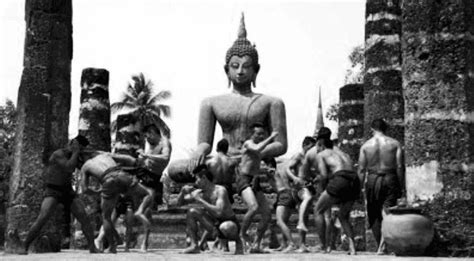

A sport as old as Muaythai has many legends. Even its beginnings are lost in the mist of myths. Most of its legends are, however, historically based on truth. All illustrate the pride and importance that the Thai people always had for the sport. In yesteryear, elephants crossed the border from Burma to Siam carrying the best fighter from Burma to challenge the chosen champion of Siam (now known as Thailand) to a Muaythai bout. But one without rounds, timekeepers and the sport’s recent innovations. The two champions simply fought with their forearms strapped in rope, bare knuckled till one or the other dropped; an old fashioned fight that yesterday’s heroes would recognise. Then the elephants would then carry the defeated or triumphant fighter back to Burma. Legends are made from such encounters of this legendary sport. But then Muaythai, the fighting art of the spiritual warrior, the crunching close combat battlefield skill lends itself to legends, offers a mythic arena to heroes like Nai Khanom Tom. It is the bedtime story for Thai children when dreaming about legends and warriors which have been protectors of Kings and the country.
The name Nai Khanom Tom is one that every Thai child knows and one that graces every book or publications about the sport. He is the one of the greatest Muaythai hero. In 1774, Nai Khanom Tom was a war prisoner in Burma. The Burmese had captured him when they sacked and burnt Thailand’s ancient capital, Ayutthaya. King Mangra of Burma left his capital in the north at Krung Angwa to travel to Rangoon – today’s capital, to attend the religious ceremony at Chevedakang Pagoda. The Thais still claim that the celebration was at Ket That Pagoda. What is known is that the celebrations included many entertainments, sports and games, among them Muaythai, the martial art of the battlefield. The Burmese had their own martial art – one not unlike Muaythai and its name is Parma. Parma relied heavily on the fist as the major weapon whereas Muaythai boxers were famous then and now for their skills in using elbows, knees, feet as well as fists in a fight. King Mangra wanted to see which fighting skill was superior and called for the best Siamese from the prisoners to fight his Burmese fighters. Nai Khanom Tom was the natural choice for the Thais as he was renowned for his Muaythai skills and his never die attitude.
The scene was very different from today’s fight. No timekeepers, no rounds, no gloves – the arms bound in hemp ropes instead – basic groin protection, but the groin was a legitimate target. It was a bare knuckle full on fight to the finish, not in a ring but an arena flanked by the pomp and panoply of a Burmese court fresh from victory. It has been the real fight of the ancient art of MuayBoran. There were basic differences between the two fighting styles. The Burmese boxers wore a traditional ankle length sarong in which they danced, almost in slow motion, around their opponent waiting and looking for an opening. The Burmese rely more on their fists than their feet, knees and elbows. The Thais on the other hand fought in a pannung; a traditional form of loincloth wrapped once around the body and tied in a knot at the back and uses everything they can. Nai Khanom Tom had then a freedom of movement and mobility that his opponent lacked. Nai Khanom Tom was a great fighter. Without a pause, he took them one by one through a battering and bruising contest. He defeated ten of Burma’s best. He fought for His king, his country, his friends and the freedom for all. King Mangra was one of the first to applaud the feat he had witnessed. “Every part of the Thai is blessed with venom even with his bare hands he can fell ten opponents”. The King gave Nai Khanom Tom his freedom and he returned to the old Siam and is given a hero’s welcome. The Thais badly needed a morale booster after the crushing defeat they had suffered in Ayutthaya. For the Thai people, for Muaythai, the legend of Nai Khanom Tom illustrates the best attributes to Muaythai: the indomitable will to win for an honour other than his own and the willingness to face any odds in defence of the fighting art. Above all, Nai Khanom Tom symbolises the belief that all Muaythai warriors have in their martial art – the belief that nothing can stand against it except itself. It’s a belief that has been proven right again and again. Muaythai will never die. Every 17th of March, the Thai people honour Nai Khanom Tom. That night is called “Boxer’s night” where every stadium of the country dedicates fights in honour of Nai Khanom Tom and his valour. A Nai Khanom Tom festival is also held in the beautiful ancient capital city of Ayutthaya.